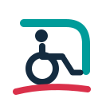
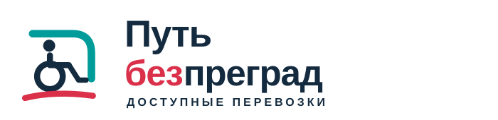

ВАРИАНТ 01
Рекомендую
Пандус
Спецтранспорт без лишних деталей

ГОРИЗОНТАЛЬНЫЙ ЛОГОТИП

Открытый силуэт кузова, пассажир на коляске и короткая линия движения. Автомобильная тема читается сразу, но не превращается в подробную иллюстрацию.
СпецавтомобильДоступная посадкаУверенное движение
НА ТЁМНОМ ФОНЕ · МОНОХРОМ
ФАВИКОН48 · 32 · 16 px